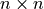
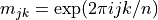
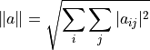

Matrices¶
Overview¶
GSL Shell main data types are real and complex matrices and many of the GSL routines works on this kind of data. GSL Shell does not have a separate type to represent a vector but column matrices are used for this purpose.
With matrix you can do basic arithmetic operations with the usual mathematical meaning provided that the dimensions of the matrices are compatible.
You can also mix freely scalar with matrices, GSL Shell will perform the appropriate operation in each case.
In general you can also mix real and complex valued number or matrix in arithmetic operations and the result will be complex if at least one of the operand is complex.
The only arithmetic operation that is not allowed is the division where the right operand is a matrix.
The reason is that this latter operation does not have a well defined mathematical meaning.
In general the inversion of the matrix can be performed using the function matrix.inv() or the function matrix.solve() to solve a linear system efficiently.
In general most of the matrix related functions can operate on both real or complex matrices and return the appropriate result.
In order to create a new matrix you should use the matrix.new() function to define a real matrix and matrix.cnew() for a complex matrix. If you want a matrix by giving explicitly all its elements you can use instead the function matrix.def().
The new() function takes two mandatory arguments, the number of rows and of columns and an optional third argument. If the third argument is not given all the elements of the matrix are initialized to zero. Otherwise, if you provide a function of two variables, lets say i and j, it will be used to initialize the element of the matrix. The provided function will be called for each element of the matrix with the index of row and column as an argument. This provides a very useful way to initialize matrices. As an example, let us suppose that we want to define a matrix m of dimension  whose elements are given by .
In GSL Shell we can define the matrix with the following command:
use 'math'
n = 4
-- we define a complex matrix that operate a Fourier transform
m = matrix.cnew(n, n, |j,k| complex.exp(2i*pi*(j-1)*(k-1)/n))
where you have previously defined n to be a small integer number.
Accessing Matrix Elements¶
To access an element of a matrix placed at the i-th row and the j-th column you can use the syntax m:get(i, j) where m is the matrix.
You can also change the value with the following syntax m:set(i, j, x) to set the element to the value x.
In the GSL Shell’s indexing convention the first row or column of a matrix in identified by the number one. This is the same indexing convention used in FORTRAN and also in standard mathematical notation and is also coherent with the Lua indexing of a table.
In GSL shell the matrix with only one column are considered like vectors and you can reference their elements just by indexing the vector like in v[i].
You can therefore read or set a specific element of a vector using
simple indexing like we illustrate in the following example:
>>> -- we define a vector, it is just a matrix with one column
>>> v = matrix.vec {0, 0.2, 0.4, 7.6, 0.8, 1.0}
>>> v
[ 0 ]
[ 0.2 ]
[ 0.4 ]
[ 7.6 ]
[ 0.8 ]
[ 1 ]
>>> v[4]
7.6
>>> v[4] = 0
>>> v[4]
0
In the case you index a matrix with more then one column you will obtain a row of the matrix but in column form. The resulting column matrix will refer to the same underlying data of the original matrix. Since the two matrices refer to the same data any change to the content of one matrix will affect both of them.
Here some simple examples of matrix manipulations:
>>> m = matrix.def {{0.2, 4, -0.5}, {2, 0, 1.1}}
>>> m
[ 0.2 4 -0.5 ]
[ 2 0 1.1 ]
>>> m[1]
[ 0.2 ]
[ 4 ]
[ -0.5 ]
>>> -- we change one of the matrix element
>>> m[1][2] = -0.7
>>> m
[ 0.2 -0.7 -0.5 ]
[ 2 0 1.1 ]
In general the aliasing between matrices can be useful in many circumstances to refer to an original matrix by using a submatrix.
In case you really need a submatrix which is an independent copy of its parent matrix you can just use the matrix.copy() function to obtain a copy.
You should have noticed that when you index a matrix with many column you obtain the row identified by the index but in column form.
If you want to obtain a row in the form of a row matrix you can use the row() method.
In alternative you can also use the slice() method that let you extract any submatrix of contiguous rows and columns.
Matrix Dimensions¶
To obtain the dimension of a matrix you should use the matrix.dim() function that takes the matrix as argument and returns its number of rows and columns. Here an example:
-- we define a matrix
m = matrix.def {{0.2, 4, -0.5}, {2, 0, 1.1}}
-- we obtain the number of rows and columns, r and c respectively
r, c = matrix.dim(m)
Note
You can also use the length operator # with a matrix to obtain just the number of rows.
Matrix methods¶
- class Matrix¶
- copy()¶
Return a copy of the matrix.
- dim()¶
Return the dimensions of the matrix, in the order the numbers of rows and the number of columns.
- rows()¶
Return the number of rows of the matrix.
- cols()¶
Return the number of columns of the matrix.
- get(i, j)¶
This function returns the (i,j)-th element of a matrix. As a general convention in GSL Shell the index of the first element is 1.
- set(i, j, v)¶
This function sets the value of the (i,j)-th element of the matrix to v.
- slice(k0, k1, n0, n1)¶
Return a sub-matrix obtained from the original matrix by starting at the element (k0, k1) and taking n0 rows and n1 columns. The matrix that is returned is a “view” of the existing matrix in the sense that it make reference to the same underlying matrix. So if you modify the submatrix you will implicitly modify the original matrix and vice versa.
- norm()¶
Return the Frobenius norm of the matrix. It is defined as:

where aij are the elements of the matrix.
- row(i)¶
Return the submatrix given by the i-th row of the matrix.
- col(j)¶
Return the submatrix given by the j-th column of the matrix.
Matrix Functions¶
All the functions described in this section have an equivalent function for complex valued matrix. The functions for complex matrix are obtained by adding the ‘c’ prefix to the name. So for example the function mul() has an equivalent for complex matrix whose name is cmul().
- matrix.new(r, c[, finit])¶
Returns a new matrix of
rrows andccolumns. Iffinitis not given the matrix is initialized to 0. Iffinitis provided the functionfinit(i, j)is called for all the elements with the i arguments equal to the row index and j equal to the column index. Then the value returned by the function is assigned to the matrix elements.
- matrix.cnew(r, c[, finit])¶
Returns a new complex matrix. The meaning of its arguments is the same of the function
new().
- matrix.def(t)¶
Convert the table t into a matrix. The table should be in the form
{{row1_v1, row1_v2, ...}, {row2_v1, row2_v2, ...}, ...}where each term is a number. You should also ensure that all the lines contains the same number of elements. Example:th = pi/6 -- create a 2x2 rotation matrix using the angle th m = matrix.def {{cos(th), sin(th)}, {-sin(th), cos(th)}}
- matrix.vec(t)¶
Convert the table t into a column matrix. In GSL Shell column matrices are considered vectors. The table should be in the form
{v1, v2, v3, ...}.
- matrix.stack(layout)¶
Returns a new matrix by stacking together, horizontally and vertically, more matrices as specified in the
layoutargument.The argument
layoutshould be in the form{{A1, A2, ...}, {B1, B2, ...}, ...}to indicate the layout of the matrices to be composed. Each of the layout terms can be a matrix or a scalar. If a scalar is given it will be transformed into a matrix of identical elements and whose dimensions will be adjusted to fit the other matrices in the layout.
- matrix.dim(m)¶
Returns two values, in the order, the number of rows and of columns of the matrix.
- matrix.copy(m)¶
Returns a copy of the matrix.
- matrix.transpose(m)¶
Return the transpose of the matrix.
- matrix.hc(m)¶
Return the hermitian conjugate of the matrix.
- matrix.diag(t)¶
Given a table
tof lengthnreturns a diagonal matrix whose diagonal elements are equal to the elements oft.
- matrix.unit(n)¶
Return the unit matrix of dimension nxn.
- matrix.set(a, b)¶
Set the matrix
ato be equal to the matrixb. It raise an error if the dimensions of the matrices are different. Please note that it is different than the statement:a = b
because this latter simple make the variable
arefer to the same matrix ofb. With theset()function you set each element of an existing matrixato the same value of the corresponding element ofb.
- matrix.fset(m, f)¶
Set the elements of the matrix
mto the value given byf(i, j)whereiandjare, respectively, the row and column indexes of the matrix. Note that this function have the same semantic of thenew()function with the difference thatfset()operate on a matrix that already exists instead of creating a new one.